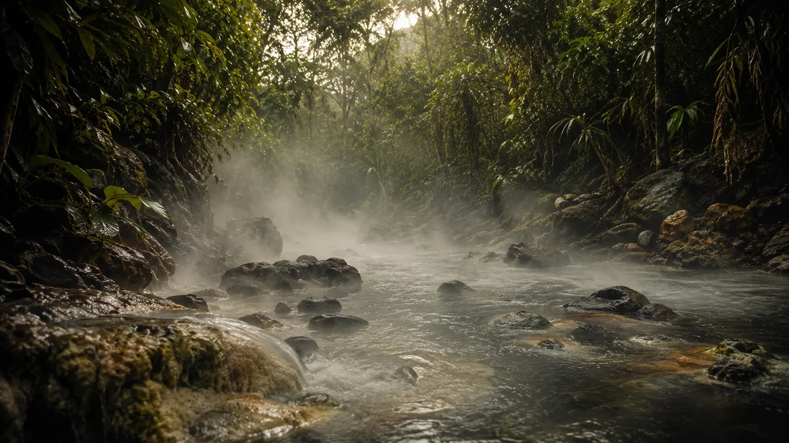
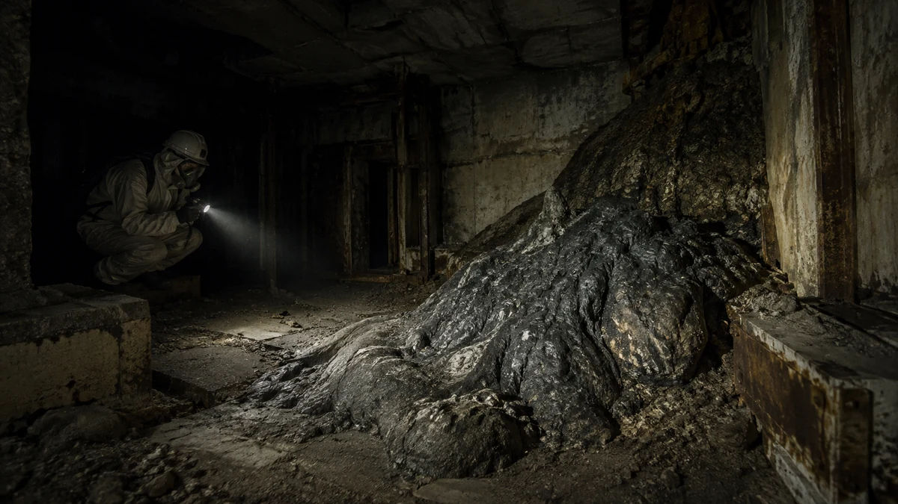
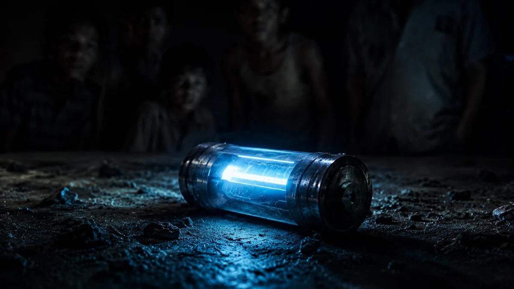

Ciencia Extrema
Accidentes científicos, radiación, química, física, industria e ingeniería.
CIENCIA • HISTORIA • INGENIERÍA • NATURALEZA
hasta que la ciencia las explica.
Divulgación científica cinematográfica en español. Fenómenos extremos, accidentes científicos, naturaleza letal y misterios reales del planeta.
DATÓMICO es un canal de divulgación científica cinematográfica. Investigamos historias reales que parecen ficción y las explicamos con contexto, evidencia y ciencia.
No hacemos conspiraciones. No presentamos leyendas como hechos. Cuando una escena es una recreación visual, la historia detrás sigue siendo real.
Cada serie explora un tipo distinto de historia, con la misma regla: realidad primero.
Accidentes científicos, radiación, química, física, industria e ingeniería.
Lagos, cuevas, volcanes, océanos y fenómenos geológicos imposibles de ignorar.
Experimentos, objetos, descubrimientos, laboratorios y tecnología extrema.
Animales, plantas, hongos, parásitos y venenos con mecanismos sorprendentes.
Historias reales donde la ciencia, la naturaleza y los errores humanos llevaron la realidad más allá de lo imaginable.

RECREACIÓN VISUALEl río de la Amazonía peruana capaz de alcanzar temperaturas extraordinariamente altas.
VER EPISODIO →Un accidente de descompresión que mostró, en segundos, el poder brutal de la presión.
VER EPISODIO →
RECREACIÓN VISUALUna masa de corium nacida del desastre de Chernóbil y convertida en símbolo de radiación extrema.
VER EPISODIO →
RECREACIÓN VISUALUna fuente radiactiva abandonada que terminó contaminando personas, hogares y una ciudad.
VER EPISODIO →Buscamos acceso a instalaciones, especialistas, investigaciones, expediciones, tecnología y fenómenos reales que merecen ser explicados.